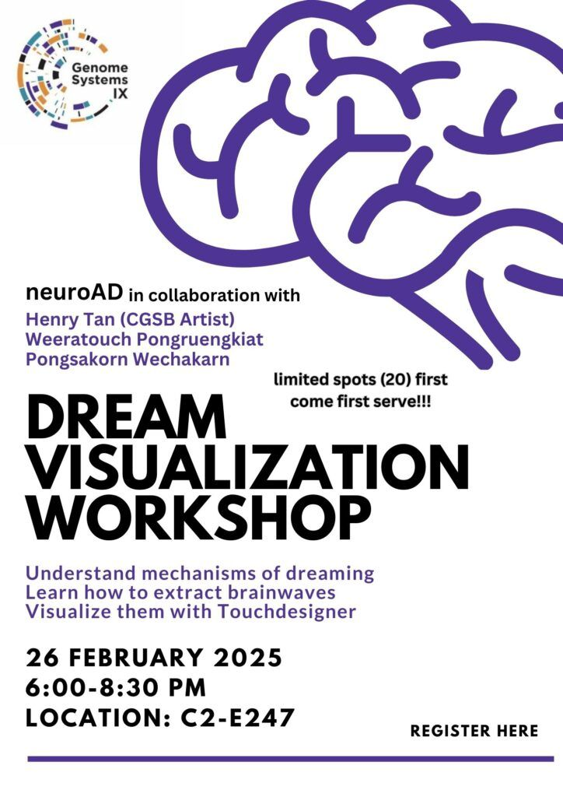

The Dream Visualization workshop delves into the fascinating world of dream visualization through brainwave signals. Participants will explore the neuroscientific basis of brainwave production, gaining insights into how the brain generates these electrical patterns. Hands-on experience with EEG devices will allow participants to capture and analyze their own brainwave activity, including the unique patterns associated with dreaming. This raw data will then be channeled into TouchDesigner, a powerful visual programming software, where participants will learn to translate real-time EEG signals into dynamic and captivating visual representations of their dream states. This unique fusion of neuroscience, technology, and art empowers participants to create their own “dream machines,” offering a tangible and artistic exploration of the subconscious mind.